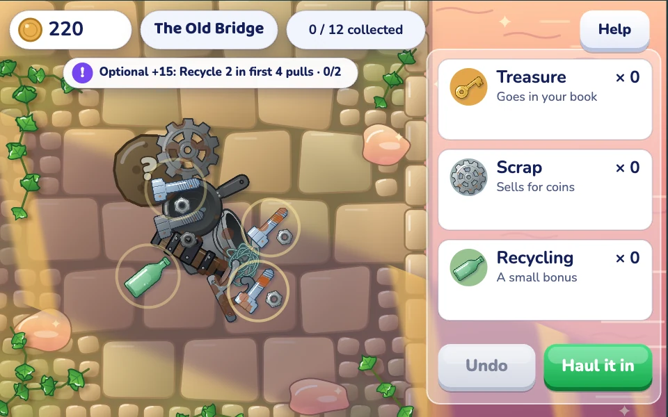
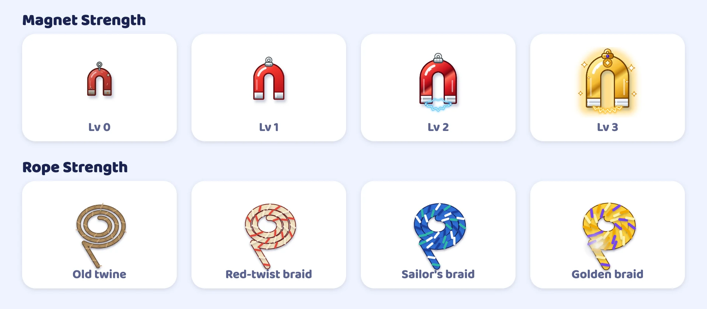
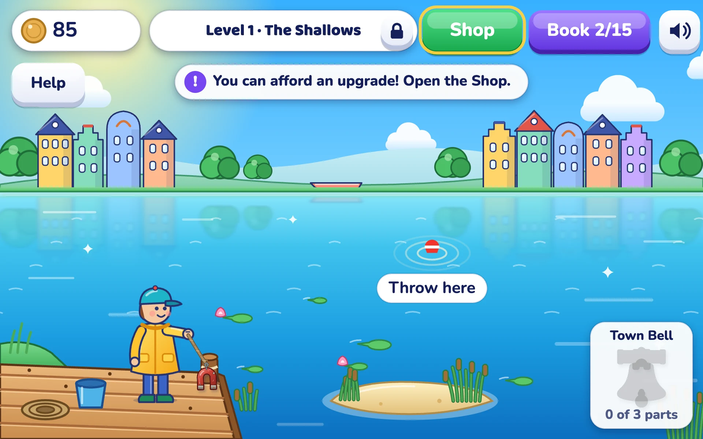
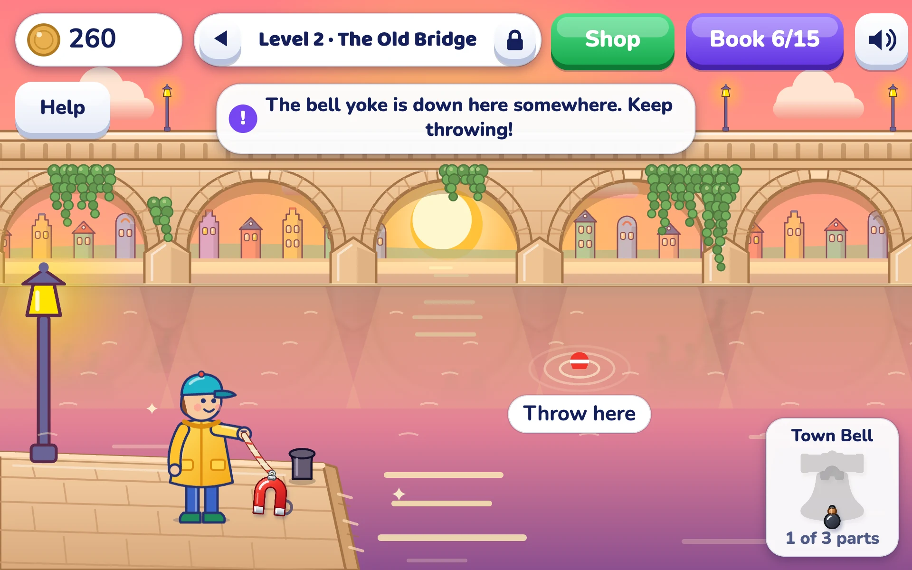
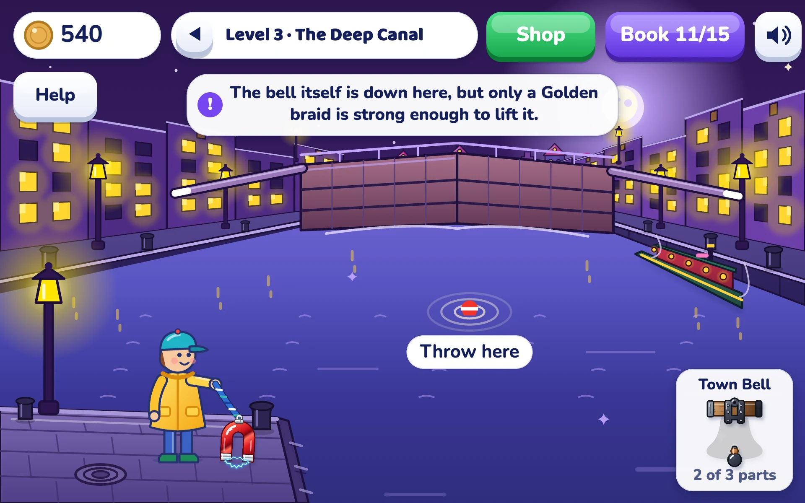
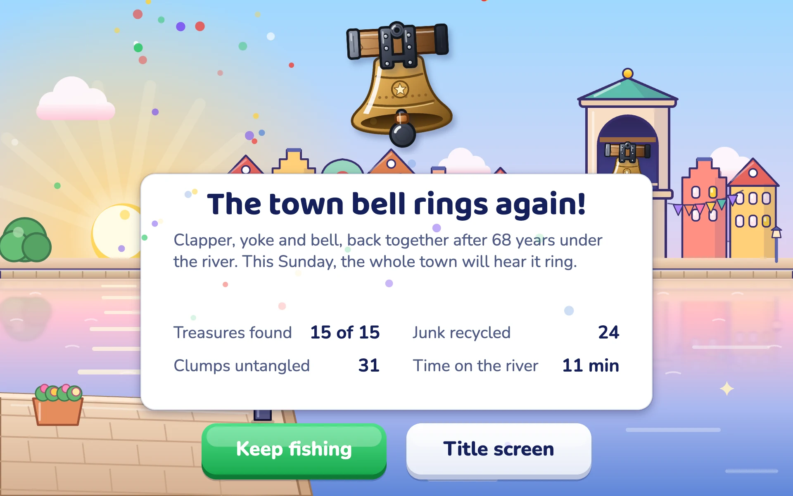

Magnet Fishing
A calm fishing puzzle that placed 2nd of 20 at JAMKADIUM 2026.

Overview
For JAMKADIUM 2026, on the theme CLUTTER, Braxton Hauw and I made a calm fishing puzzle inspired by Roblox fishing simulators. You throw a magnet, pick apart the clutter it pulls up, upgrade your tools and rebuild the town bell across three rivers.
- My role
- Art directionBuild
- Team
- With Braxton Hauw
- Event
- JAMKADIUM 2026Theme: CLUTTER
- Result
- 2nd of 20 entries
Problems
Three problems shaped the game.
Upgrades were easy to miss.
A number going up in a menu is easy to miss.
The map didn’t fit.
A canal overlapped the other rivers.
The goal was too far away.
One bell at the end of three rivers was too far away to pull anyone forward.
How might a pile of clutter feel calm, with the next goal always in sight?
Goals
Menu numbers → On the tool
Draw every upgrade in the angler’s hand.
One map → Three rivers
Give each river its own place and time of day.
One far bell → Three parts
One part per river keeps the next one in sight.
Every pile is a small puzzle.
The magnet pulls up one tangled clump of junk. A piece comes free only when nothing above it overlaps it, so you free the pile one piece at a time.

Every upgrade shows on the tool.
Five tools, three levels each. The magnet grows and turns gold, and the rope goes from old twine to a golden braid, so every throw shows what the coins bought.

Rope Strength opens the next river.
A stronger rope started as a fix for a canal that overlapped the other rivers. It turned the rope into the key between levels, and gave each river its own scene, music and bigger piles.

Morning
Sunset
NightThe bell comes back in three parts.
One part in each river, so the next one stays in sight. Rebuild it and the bell rings again at dawn.

Results
- 2ndof 20 entries
At JAMKADIUM 2026, on the theme CLUTTER.
- 29automated tests
The pile rules, the tutorial clump, the rivers and the bell parts.
- 0audio files
The music, the river and every sound are synthesized at runtime.
What I learned
Show progress where the player is already looking.
A bigger magnet in the angler’s hand says more than a number in a menu, and a goal split in three keeps the next step close.
How it was made
Stack
Plain JavaScript modules drawing on one 960 x 600 canvas, with no engine and no dependencies. Every number in the game, from item values to upgrade prices, lives in one data file. The music, the river ambience and every sound effect are synthesized at runtime with the Web Audio API.
Testing
29 automated tests cover the pile rules, the tutorial clump, the rivers and the bell parts. Browser playtests by AI testers before the deadline caught a sale that paid out about fifteen times over, fixed before submission.
Claude (Anthropic) adapted my artwork into SVG and generated the game code, item text and documentation. OpenAI Codex helped with testing, bug fixes and code improvements. No image-generation model was used, and the game’s credits list every piece.